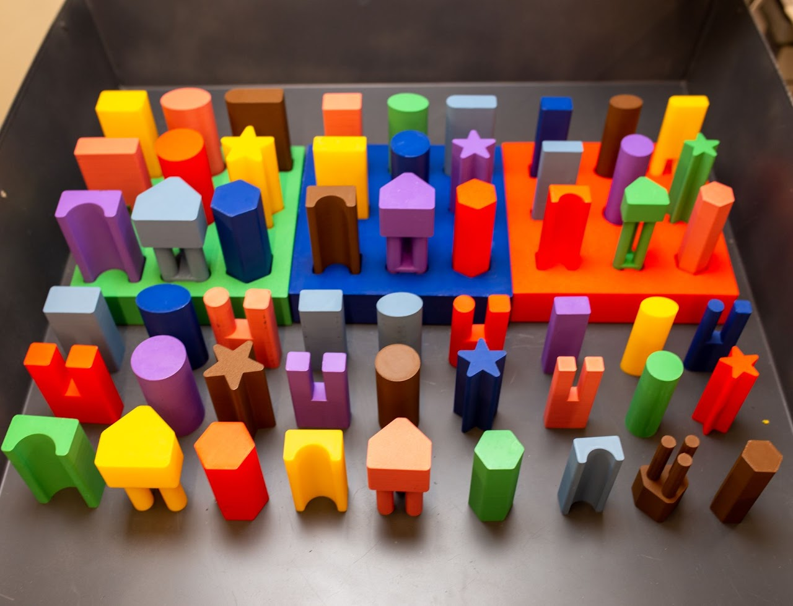

A Functional Manipulation Benchmark for Generalizable Robotic Learning

Our benchmark for studying robotic learning for functional manipulation consists of a variety of easily
reproducible 3D printed objects, each one requiring a sequence of grasping, reorientation, and assembly
behaviors. Generalization can be evaluated on test objects and varied positions, as well as more complex
multi-stage assembly tasks. We also provide an imitation learning system that provides a basic set of
policies for each skill, allowing researchers to use our tasks as a toolkit for studying any portion of the
pipeline.